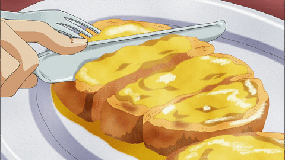

Home
Grilled Cheese

Grilled cheese is my favorite dish
The traditional American grilled cheese sandwich is made with sliced white
bread and American cheese, although there are many variations on the
recipe.
Ingredients
-
Bread: a thicker sliced bread such as texas toast works
best
-
Butter: use a generous 1/2 Tbsp of butter on each slice
of bread. We use unsalted but any butter will work here.
-
Cheese: we use a combination of sliced medium cheddar,
gouda and Havarti cheese.
How to make Grilled Cheese Step-By-Step
How long to cook grilled cheese? Total cooking time for
grilled cheese over low to medium/low heat is 6-7 minutes. That is enough
time for the exterior to crisp and brown and allow the cheese to fully
melt.
-
Butter the toast: spread 1/2 Tbsp butter on one side of
each slice of bread.
-
Heat skillet: place a skillet over low to medium/low
heat. A griddle should be at 275˚F. Immediately add 2 slices of bread
with the butter-side-down.
-
Add cheese: stack cheeses on one of the pieces of
bread, cover with the other piece of toast and flip the sandwich over.
-
Brown the toast: Continue sauteeing, flipping once,
until both sides are golden brown and cheese is melted.
-
Serve: cut the sandwich in half on the diagonal to
serve.